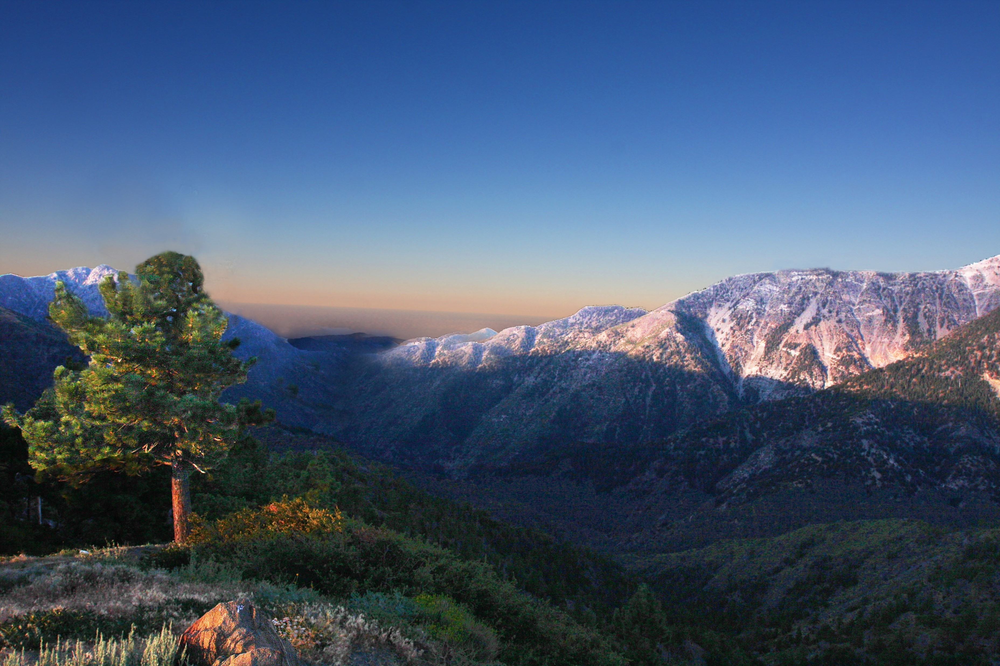
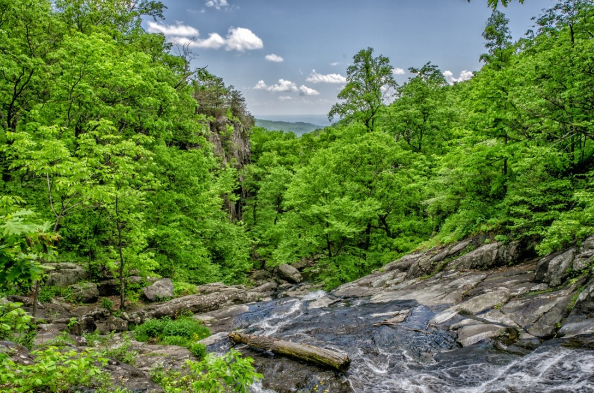

HUOM! Sivusto on kokeiluvaiheessa, joten tämän sivun blogitekstit on tuotettu tekoälyä hyödyntäen.

Opiskeleminen opettajaksi on matka, joka avaa ovia sekä henkilökohtaiseen kasvuun että yhteiskunnalliseen
vaikuttamiseen. Opettajaksi opiskelu yhdistää teoreettisen tiedon ja käytännön harjoitukset, mikä valmentaa
opiskelijaa kohtaamaan monipuolisia haasteita luokkahuoneessa. Koulutuksessa syvennytään pedagogisiin
periaatteisiin, oppimispsykologiaan sekä erilaisten oppijoiden tarpeisiin.
Opintojen aikana opiskelijat pääsevät myös käytännön työskentelyyn kouluympäristössä, mikä tarjoaa arvokasta
kokemusta ja mahdollisuuden kehittää omaa opetustaan. Huolellinen valmistautuminen ja jatkuva oppiminen ovat
keskeisiä elementtejä, joiden avulla tulevat opettajat voivat inspiroida ja motivoida oppilaitaan.
Tavoitteena on luoda oppimisympäristö, jossa jokainen oppilas voi kukoistaa ja löytää omat vahvuutensa.

Opettajana työskenteleminen on monipuolinen ja palkitseva tehtävä, joka vaatii paitsi asiantuntemusta myös
intohimoa kasvatustyöhön. Opettajat eivät ainoastaan siirrä tietoa oppilaille, vaan he myös innostavat,
ohjaavat ja tukevat opiskelijoita löytämään omat vahvuutensa ja kehittämään itsenäistä ajatteluaan. Työ
eroaa päivittäin; saatat kohdata erilaisia haasteita, kuten oppilaiden moninaiset tarpeet ja oppimistavat,
mutta juuri nämä kokemukset tekevät työstä niin rikkaan. Hyvä opettaja rakentaa vahvoja suhteita
oppilaisiinsa ja luo turvallisen oppimisympäristön, jossa kaikki voivat kehittyä. Työskentely opettajana on
sitoutumista elinikäiseen oppimiseen ja päivittäiseen kasvuun, sekä omassa että oppilaiden elämässä.

Työn ohella opiskeleminen voi olla sekä haastavaa että palkitsevaa. Se tarjoaa mahdollisuuden kehittää omaa ammattitaitoa ja avartaa näkökulmia, mutta vaatii myös erinomaista ajanhallintaa. Tärkeintä on luoda tasapaino työn, opiskelun ja vapaa-ajan välille. Hyödynnä esimerkiksi työpaikan tarjoamia koulutusmahdollisuuksia ja keskustele esimiesten kanssa opintojesi tukemiseksi. Muista myös varata aikaa rentoutumiseen ja itsesi huolehtimiseen, jotta jaksat pitkällä tähtäimellä. Opiskeleminen työn ohella voi avata ovia uusiin uramahdollisuuksiin ja kehittää sinua kokonaisvaltaisesti.